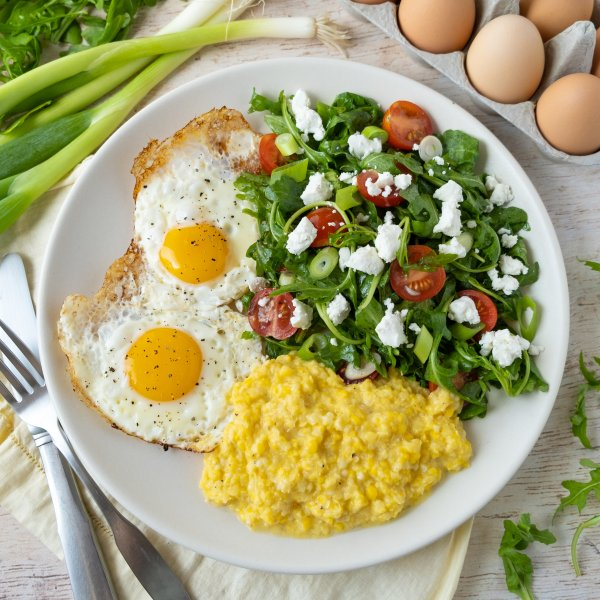

Fresh Corn "Polenta" with Fried Eggs & Goat Cheese-Arugula Salad

Total Time
35 min
Nutrition (per serving)
556.7 kcalCalories
28.5 gProtein
35.3 gCarbs
36.2 gFat
Full nutrition table
| Calories | 556.7 kcal |
| Total fat | 36.2 g |
| Saturated fat | 14.6 g |
| Trans fat | 0.6 g |
| Cholesterol | 370.4 mg |
| Sodium | 273.6 mg |
| Carbohydrates | 35.3 g |
| Fiber | 4.9 g |
| Sugars | 13.3 g |
| Protein | 28.5 g |
| Potassium | 900.4 mg |
| Calcium | 176.7 mg |
| Iron | 4 mg |
| Vitamin A | 1807.6 IU |
| Vitamin C | 27.9 mg |
| Vitamin D | 83.1 IU |
Cookware
Ingredients
- 1 (5 oz) pkgbaby arugula
- 6 earscorn
- 8eggs
- 1 (4 oz) loggoat cheese
- 1 pintgrape tomatoes
- ½ small bunchgreen onions (scallions)
- 2 fl ozheavy whipping cream
- 2 ozParmesan cheese
- black pepper
- extra virgin olive oil
- red wine vinegar
- salt
Steps
- Wash and dry the fresh produce. (Skip the arugula if it came pre-washed.)6 ears corn
½ small bunch green onions (scallions)
1 pint grape tomatoes
1 (5 oz) pkg baby arugula - Remove husks and silks from corn. Using your hands, snap each ear in half. Working over a large bowl, coarsely grate corn off of the cob, catching all of the kernels and corn juices in the bowl.
- Preheat a medium saucepan over medium heat.
- Once the saucepan is hot, add oil and swirl to coat the bottom. Add corn and its juices to the saucepan, along with cream, salt, and pepper. Cook, stirring frequently, until the corn is cooked and most of the liquid has evaporated, about 5 minutes. Reserve bowl for later use.1 tsp extra virgin olive oil
2 fl oz (¼ cup) heavy cream
¼ tsp salt
¼ tsp black pepper - Meanwhile, finely grate Parmesan. Add to the saucepan with the corn and stir to combine the polenta. Cover and remove from heat.2 oz Parmesan cheese
- Preheat a large skillet over medium-high heat.
- While the skillet heats up, place oil, vinegar, salt, and pepper in the reserved bowl. Whisk to combine the dressing.2 tbsp extra virgin olive oil
2 tsp red wine vinegar
¼ tsp salt
¼ tsp black pepper - Once the skillet is hot, add oil and swirl to coat the bottom. Cooking in batches if necessary, gently crack eggs into the skillet and season with salt and pepper. Cook until the tops of the whites are set but the yolks are still runny, about 4 minutes.2 tsp extra virgin olive oil
8 eggs
⅛ tsp salt
⅛ tsp black pepper - Meanwhile, trim green onions; cut crosswise into ¼-inch pieces at an angle. Add to the bowl with the dressing.
- Halve tomatoes. Add to the bowl along with the arugula and toss to combine the salad.
- Crumble goat cheese.1 (4 oz) log goat cheese
- To serve, divide polenta, eggs, and salad between plates. Top the salad with goat cheese and enjoy!